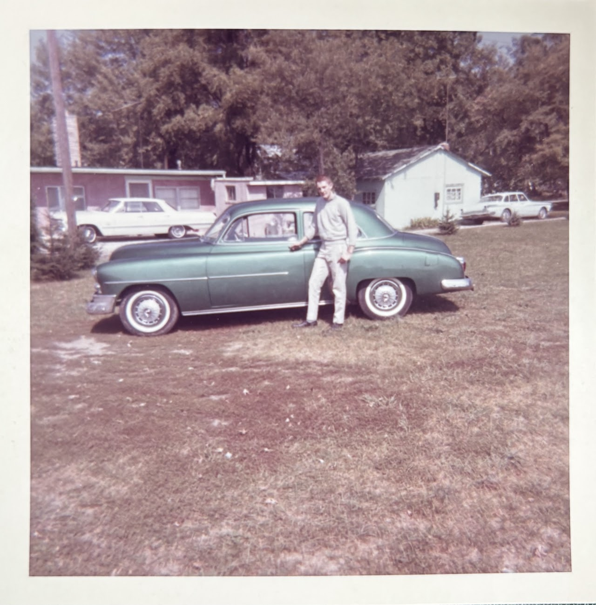
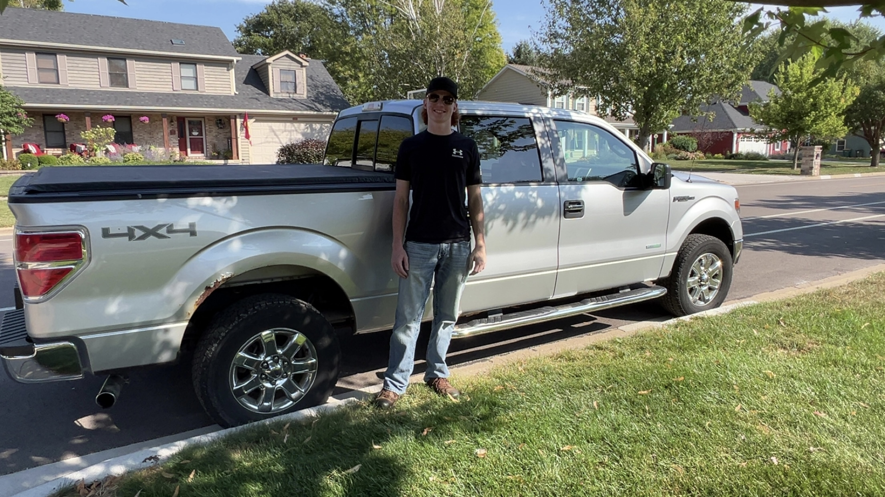
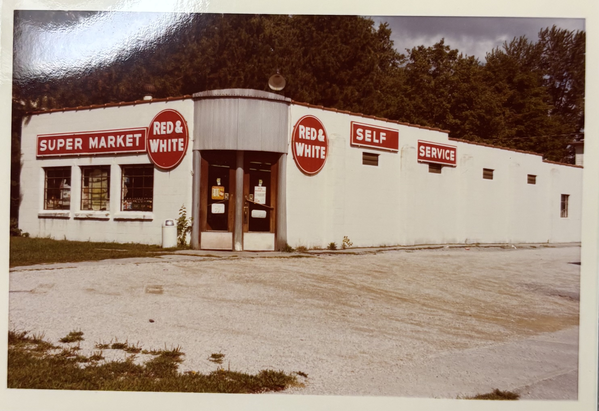
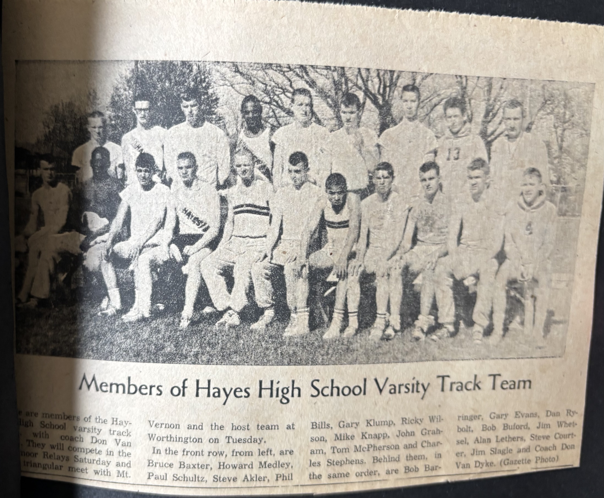
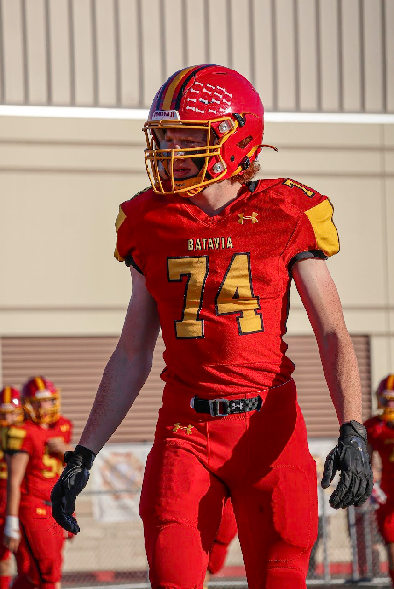

Then & Now
The 1960s vs. The 2020s
Black & white televisions, rotary phones, and transistor radios. NASA's space program was the most advanced technology most Americans had ever witnessed.
Smartphones, social media, AI, and streaming on demand. More computing power fits in a pocket than existed in the entire world in 1960.

Jim bought a used scooter for $200 and a car for $1.00, riding 15–20 miles just to visit a Dairy Queen. Gas cost around 31¢ a gallon.

Jack got a silver 2014 Ford F-150 from his grandpa at 16. Gas costs around $3–4 a gallon, and GPS navigation fits on a phone screen.

Jim sorted glass bottles for 2¢–5¢ each, picked wild strawberries, and baled hay — saving every cent for months to afford a $200 scooter.
Jack runs his own lawn mowing business — 3 to 5 yards at $30 each — depositing earnings straight into a savings account, building toward his future as an electrician.
Hayes High School, Delaware, Ohio. No internet, no calculators — homework meant books and handwriting. Jim graduated in 1963 into a country gripped by the Cold War.
Batavia High School, finishing junior year. Chromebooks, Google Classroom, and online resources — but also harder decisions, like quitting football for his health after sophomore year.

Jim ran varsity track at Hayes High School, competing in relays across central Ohio. Physical labor — baling hay, sorting stock — kept him active every day.

Jack played football until making the difficult choice to step away for health reasons. He now hits the gym every week — training on his own terms and his own schedule.

Jim was in school the day the Soviets launched Sputnik into orbit in 1957 — the shot heard around the world that started the Space Race and changed America forever.
Jack remembers the assassination of Charlie Kirk in 2025 — a shocking moment that stopped the country, much like Sputnik did for Jim's generation, proving that history keeps happening whether you're ready or not.